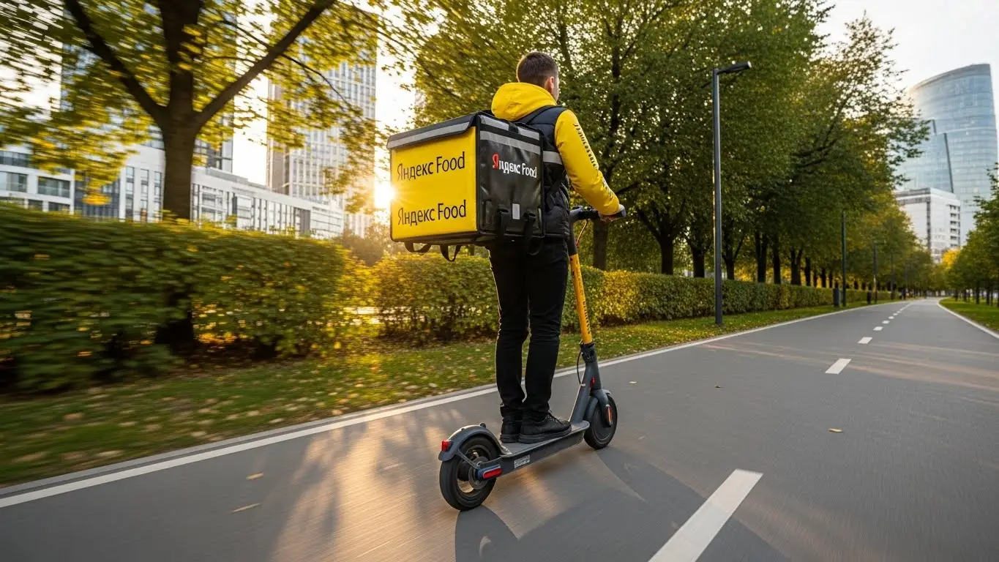
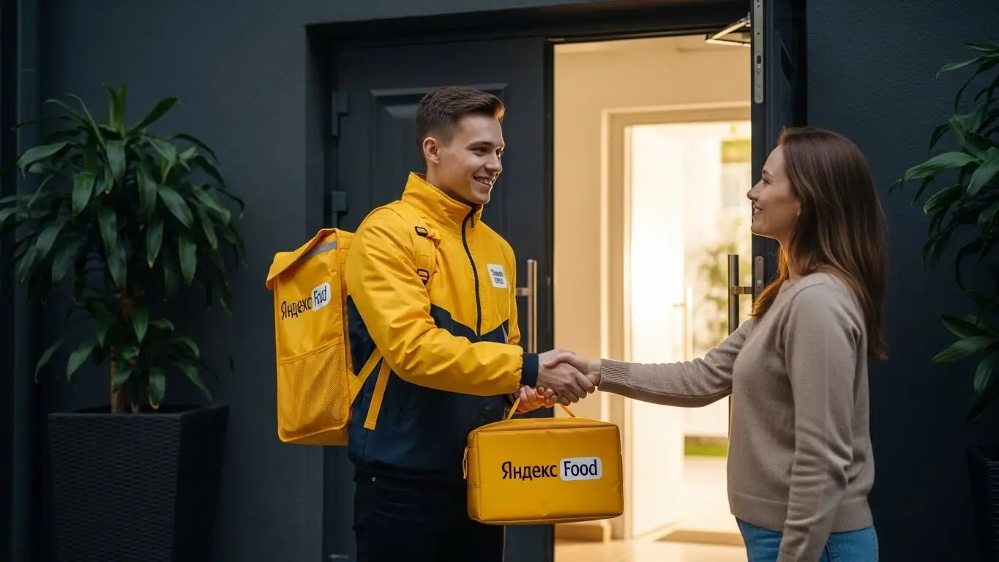
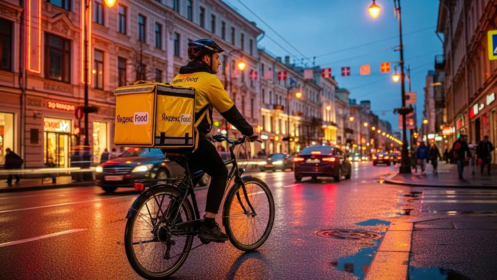
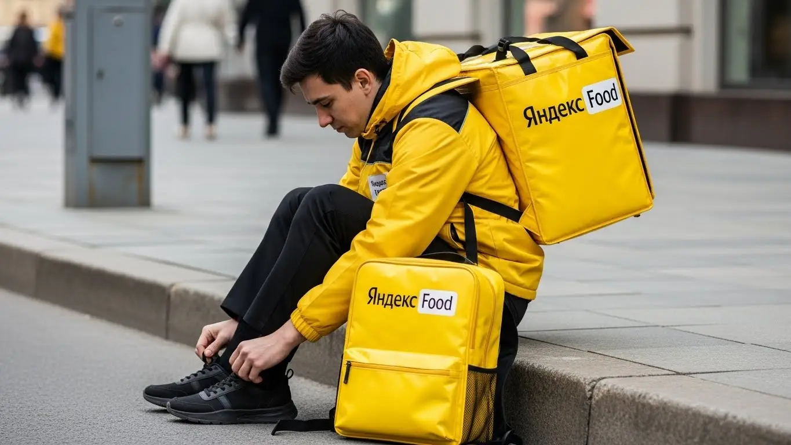

Сколько зарабатывает курьер Яндекс Еды в Нижнем Тагиле 2025-2026
- Работа курьером Яндекс Еды в Нижнем Тагиле: для кого эта вакансия и что вы получите
- Сколько вы будете зарабатывать курьером в Нижнем Тагиле: калькулятор дохода и разбор выплат
- Реальный заработок курьера в Нижнем Тагиле: смены и месячный доход
- График работы и форматы занятости
- Требования к кандидату и документы
- Самозанятость, налоги и юридическая чистота
- Пошаговое оформление и первый выход на линию в Нижнем Тагиле
- Пешком, на вело или на авто: что выгоднее в Нижнем Тагиле
- Районы, маршруты и «топовые» зоны заказов в Нижнем Тагиле
- Безопасность, страховка, штрафы и оплата простоя
- Плюсы и возможные минусы работы курьером в Нижнем Тагиле
- Реальные истории и отзывы курьеров из Нижнего Тагила
- Ответы на главные вопросы о работе курьером Яндекс Еды в Нижнем Тагиле
- Короткие ответы на главные вопросы
- Итоги и ваш следующий шаг
Все города
Думаешь, работа курьером в Нижнем Тагиле — это просто крутить педали и получать легкие деньги? А как насчет убитых дорог на Вагонке, пробок на проспекте Ленина в час пик или ледяного уральского ветра, который пробирает до костей? Многие видят красивые цифры в рекламе, но боятся, что по факту весь заработок съедят штрафы, бензин и ремонт. Я здесь, чтобы рассказать, как обстоят дела на самом деле, без прикрас.
Поверь, разница между курьером, который в Нижнем Тагиле зарабатывает 3-4 тысячи за смену, и тем, кто едва отбивает расходы, — не в скорости, а в знании города. Нужно понимать, где в Дзержинском районе всегда есть спрос, а куда на Тагилстрое лучше не соваться в пятницу вечером. Важно учитывать налог для самозанятых, стоимость обслуживания велосипеда или авто и как работает система приоритетов в приложении Яндекс Про. Большинство новичков на старте теряют кучу времени и денег, просто потому что действуют по шаблону, который в нашем городе не работает.
В этом гиде мы по косточкам разберём всё, что касается работы курьером Яндекс Еды именно в Нижнем Тагиле. Мы честно посчитаем, сколько реально можно заработать пешком, на велосипеде и на машине с учетом наших реалий. Я покажу на карте самые «хлебные» районы и мертвые зоны. Расскажу, как уральская погода влияет на доход, за что на самом деле штрафуют и как этого избежать. Сравним условия с другими доставками, которые есть в Тагиле, и посмотрим на реальные отзывы парней, которые катают прямо сейчас. Если же ты хочешь сразу перейти к делу, то все условия и анкета для начала собраны на странице про работу курьером Яндекс Еда в Нижнем Тагиле.
Меня зовут Алексей. Я сам начинал с желтого рюкзака, проехал по Тагилу не одну тысячу километров, а сейчас у меня свой небольшой таксопарк-партнёр. Так что я знаю эту кухню с обеих сторон — и как курьер, и как партнёр. Никакой рекламы, только мясо и личный опыт. Готов? Тогда давай по порядку, сейчас всё разложу по полочкам.
Прежде чем нырнём в детали, вот короткий гид по главным темам статьи, чтобы ты сразу нашёл то, что волнует больше всего.
Что ты точно узнаешь из этого разбора про работу в Тагиле
В этой статье ты ТОЧНО узнаешь:
- Сколько реально можно заработать в Нижнем Тагиле за смену на машине, велосипеде и пешком?
- В каких районах Тагила (Вагонка, ГГМ, Центр) больше всего заказов и как ловить пиковые коэффициенты?
- Как погода, время суток и выбор слотов в «Яндекс Про» влияют на итоговый доход?
- За что на самом деле штрафуют и как работает система приоритета, чтобы не остаться без заказов?
- Как правильно оформить самозанятость за 10 минут и сколько налогов придётся платить с дохода?
- Какой транспорт выгоднее выбрать для Тагила — авто, велосипед или пеший — и как быстро начать работать после регистрации?
А если тебе некогда читать всю статью — переходи сразу к заключению, где ты найдёшь короткие ответы на все эти вопросы и указания, в каких разделах искать подробности.
А для начала — общая картина по доходам и условиям в Нижнем Тагиле в одной картинке.
Работа курьером в Нижнем Тагиле: ключевые цифры

Работа курьером Яндекс Еды в Нижнем Тагиле: для кого эта вакансия и что вы получите
Кому подойдёт эта работа в Нижнем Тагиле
Давай начистоту: работа курьером в Яндекс Еде — это не для всех, но для многих она становится отличным решением. В Нижнем Тагиле эта вакансия идеально подходит, если ты студент и ищешь, как совмещать пары с заработком. Здесь ты получаешь по-настоящему свободный график — можешь выходить на пару часов после учёбы или работать полные дни на выходных. Никто над душой стоять не будет.
Это также хороший вариант для тех, кому нужна подработка к основной зарплате, например, после смены на заводе. Одно из главных преимуществ — ежедневные выплаты: деньги приходят на карту, что сильно выручает, когда до аванса ещё далеко. Если у тебя есть своя машина, это вообще отдельный разговор — сможешь брать больше заказов и работать по всему городу. И самое главное — чтобы стать курьером, не нужен опыт. Тебя всему научат, покажут, как пользоваться приложением Яндекс Про, и уже в первый день ты сможешь заработать свои первые деньги.
Главные преимущества для жителей районов Вагонка, ГГМ, Центр
Одно из главных удобств работы в Яндекс Еде в Нижнем Тагиле — возможность доставлять заказы прямо в своём районе. Тебе не нужно тратить час-полтора, чтобы добраться до какой-то специальной «рабочей зоны». Живёшь на Вагонке — можешь брать заказы там. Это огромный жилой массив, где всегда есть спрос. То же самое касается и ГГМ (Гальяно-Горбуновского массива) — куча многоэтажек, магазинов и кафе, работы хватает.
Если ты из центральной части, например, Ленинского района, то тут вообще раздолье: рестораны, фастфуд, офисы. Суть в том, что ты выходишь из дома и сразу начинаешь работать. Это экономит и время, и деньги на проезд. А отличное знание своего района, всех коротких путей и дворов, поможет доставлять заказы быстрее и, как следствие, зарабатывать больше.
Краткое обещание по доходу и условиям
Теперь о том, сколько зарабатывает курьер. В Нижнем Тагиле активный доставщик Яндекс Еды за полную смену (8–10 часов) может спокойно делать 2500–4000 рублей. Если рассматривать это как подработку на 3–4 часа в день, то выйдет в районе 1000–1500 рублей. В месяц при полной занятости можно выйти на доход от 50 000 до 80 000 рублей и даже больше, особенно если ты на своём авто и работаешь в пиковые часы.
Ключевые условия работы простые и прозрачные. Во-первых, свободный график — ты сам решаешь, когда и сколько работать, выбирая удобные слоты в приложении. Во-вторых, ежедневные выплаты: заработал сегодня — получил деньги на карту уже сегодня или на следующий день. И в-третьих, начать можно без опыта. Основные требования — это желание, смартфон и умение ориентироваться в городе.
Сколько вы будете зарабатывать курьером в Нижнем Тагиле: калькулятор дохода и разбор выплат
Из чего складывается доход курьера
Твой заработок в Яндекс Еде — это не просто фиксированная ставка. Он складывается из нескольких частей, и если понимать, как это работает, можно неплохо увеличить итоговую сумму. Во-первых, есть базовая оплата за каждый выполненный заказ. Во-вторых, к ней добавляется плата за расстояние — чем дальше везти, тем больше денег.
Кроме этого, есть повышающие коэффициенты. В часы пик (обед, ужин), в плохую погоду или в зонах с высоким спросом стоимость заказов умножается на этот коэффициент — всё это видно в приложении Яндекс Про. Также система начисляет бонусы за выполнение определённого количества заказов за день или неделю. Не стоит забывать и про чаевые от клиентов: всё, что они оставляют, идёт тебе в карман, сервис комиссию с них не берёт. И вишенка на торте — оплата простоя. Если ты на плановом слоте, а заказов мало, сервис доплатит за ожидание. Иногда даже компенсируют проезд на общественном транспорте.
Как пользоваться калькулятором дохода
Чтобы прикинуть свой возможный заработок, на сайте есть специальный калькулятор. Пользоваться им элементарно. Сначала выбираешь свой город — Нижний Тагил. Затем указываешь, как планируешь доставлять: как пеший курьер, на велосипеде или на своём автомобиле. От этого сильно зависит скорость и количество заказов, которые ты сможешь выполнить.
Далее выставляешь, сколько часов в день и сколько дней в неделю ты готов работать. Например, 4 часа 5 дней в неделю как подработку или 8 часов 6 дней в неделю для полной занятости. На выходе калькулятор покажет примерный диапазон твоего дохода за день и за месяц. Понятно, что это прогноз, а не твёрдое обещание, но он даёт вполне реалистичное представление о цифрах, на которые можно ориентироваться.
Прикинь свой доход курьера в Нижнем Тагиле
Твой примерный доход в месяц:
Это примерный расчёт на основе средней ставки в 400 ₽/час для Нижнего Тагила. Реальный доход зависит от спроса, бонусов и твоего графика.
Примеры расчёта для пешего, вело- и авто‑курьера в Нижнем Тагиле
Давай на конкретных примерах, чтобы было понятнее.
- Пеший курьер-студент. Работает в центре Нижнего Тагила, в районе проспекта Ленина, по 4 часа вечером после учёбы. Доставляет заказы из Яндекс Еды, которые там частые, но на короткие расстояния. За смену он выполняет 8–10 заказов и зарабатывает в среднем 1200–1600 рублей.
- Курьер на велосипеде в спальных районах. Парень-велокурьер работает на ГГМ и в Тагилстроевском районе. За счёт скорости он покрывает большую территорию, чем пеший. За 6-часовую смену в выходной день он может сделать 15–18 заказов и получить 2000–2800 рублей.
- Курьер на автомобиле на полной занятости. Мужчина на своём авто работает по 8–10 часов, берёт заказы Яндекс Еды и Яндекс Доставки по всему городу, включая дальние поездки на Вагонку или в пригородные посёлки. В плохую погоду он вообще нарасхват. Его дневной заработок может достигать 3500–5000 рублей, особенно если ловить пиковые коэффициенты и бонусы.
Эти примеры показывают, что доход сильно зависит от выбранной стратегии. Чтобы узнать самые актуальные условия, посмотреть детальный FAQ и заполнить анкету, загляни на официальную страницу про работу курьером Яндекс Еда в твоём городе — там собрана вся информация для старта.
Реальный заработок курьера в Нижнем Тагиле: смены и месячный доход
Давай сразу к главному — к деньгам. Сколько реально зарабатывает курьер в Нижнем Тагиле? Цифры в рекламе — это одно, а реальность на линии — совсем другое. Я не буду обещать золотых гор, а просто разложу по полочкам, из чего складывается твой доход и на какие суммы можно рассчитывать, если работать с головой, а не просто катать часы.
Твой заработок — это не фиксированная ставка. Он зависит от транспорта, количества часов на линии и, что самое важное, — от времени и места работы. Один курьер может за 8 часов получить 2000 рублей, а другой за то же время — 4000. Разница — в стратегии. И сейчас я объясню, как работает эта математика в наших тагильских реалиях.
Диапазон дохода для подработки и полной занятости
Если ты ищешь подработку на несколько часов в день, чтобы закрыть кредит или просто иметь карманные деньги, цифры будут одни. Если же рассматриваешь это как основную работу — совсем другие. Вот примерные вилки дохода в Нижнем Тагиле, на которые можно ориентироваться.
При подработке (2–4 часа в день, в основном в пиковые часы):
- Пеший курьер: В среднем 600–1200 рублей за смену. Идеально для центра, где много заказов на короткие расстояния.
- Курьер на велосипеде: 800–1600 рублей. Ты быстрее пешего, можешь брать заказы подальше, поэтому и доход выше.
- Курьер на автомобиле: 1200–2500 рублей. Самый высокий доход, но не забывай вычитать расходы на бензин. Зато тебе доступны самые дальние и дорогие заказы по всему городу, от Вагонки до ГГМ.
При полной занятости (8–10 часов в день, с перерывами):
- Пеший курьер: 1800–2800 рублей в день. В месяц может выходить 40 000–55 000 рублей.
- Велокурьер: 2200–3500 рублей в день. Месячный доход — в районе 50 000–70 000 рублей.
- Автокурьер: 3000–5000 рублей в день «грязными». За вычетом топлива чистая месячная зарплата составляет от 65 000 до 90 000 рублей, а у самых активных и больше.
Это реальные цифры для нашего города при стабильной работе. В какие-то дни будет больше, в какие-то меньше, но в среднем за месяц выходит именно так.
Как район, время суток и погода влияют на доход
Твой заработок — это не просто плата за время. Он напрямую зависит от спроса: где больше заказов, там выше оплата. Это основа, которую нужно понять.
Главный твой друг — это повышающий коэффициент, который появляется в приложении в зонах высокого спроса. Карта в «Яндекс Про» окрашивается в разные цвета, от жёлтого до фиолетового. Чем ярче цвет — тем больше доплата к каждому заказу. Эти бонусы появляются, когда курьеров не хватает, а заказов много. Например, в обеденный пик (с 12:00 до 14:00) и вечерний (с 18:00 до 21:00), особенно в пятницу и выходные. В это время люди массово заказывают еду из ресторанов, и цена доставки растёт.
Погода — ещё один фактор. Сильный дождь, снегопад или уральские морозы — лучшее время для курьера. Люди сидят дома, заказов вал, а желающих работать на линии меньше. Сервис поднимает коэффициенты, чтобы мотивировать курьеров выйти. Плюс, в плохую погоду клиенты чаще оставляют щедрые чаевые — ценят, что ты доставил им заказ в тепле и комфорте. В Нижнем Тагиле самые «денежные» районы — это, конечно, Центр (Ленинский район), где много кафе и офисов, и густонаселённые Дзержинский район (Вагонка) и Гальяно-Горбуновский массив (ГГМ).
Советы по увеличению заработка от опытных курьеров
Чтобы зарабатывать больше, не обязательно работать дольше. Нужно работать умнее. Вот несколько проверенных советов от меня и моих ребят.
Во-первых, всегда следи за картой спроса в «Яндекс Про». Не сиди на месте в «тихой» зоне, если видишь, что в соседнем квартале всё «горит» фиолетовым. Лучше потратить 10 минут на дорогу, но потом выполнять заказы с двойным коэффициентом. Начинай смены рядом с точками притяжения: ТРЦ «КИТ», «DEPO», центральные улицы вроде проспекта Ленина.
Во-вторых, выбирай правильные слоты. Самые выгодные — вечерние в будни и практически любые в выходные. Если ты на машине, пробуй работать в «разрывном» графике: например, 3-4 часа в обед и 4-5 часов вечером. Днём, когда мало заказов, можно отдохнуть или заняться своими делами. Такой гибкий график не даёт выгореть и помогает ловить пики спроса.
В-третьих, не брезгуй мультизаказами, когда сервис предлагает забрать несколько посылок по пути. Да, это сложнее в плане логистики, но и оплата за них значительно выше. И всегда будь вежлив с клиентами. Простое «хорошего дня» может принести тебе 50–100 рублей чаевых, которые за месяц складываются в приятную сумму.
Вот недавний кейс из моего парка. Парень на своей «Гранте» работал по 8 часов с 11:00 до 19:00, зарабатывая 3300–3500 рублей в день. Я посоветовал ему сместить график на вечер и выходить с 15:00 до 23:00, чтобы захватить самый пик. Когда пошёл ливень, он специально вышел на линию на 4 часа и заработал почти 2500 рублей из-за максимальных коэффициентов. В итоге за месяц его доход вырос почти на 20 тысяч, хотя работал он столько же.
Сравнение форматов занятости в Нижнем Тагиле
| Параметр | Подработка (2-4 часа/день) | Полная занятость (8-10 часов/день) |
|---|---|---|
| Средний доход в день (авто) | 1200 – 2500 ₽ | 3000 – 5000 ₽ |
| Средний доход в день (вело) | 800 – 1600 ₽ | 2200 – 3500 ₽ |
| Лучшее время для работы | Вечерние пики (18:00-21:00), выходные | Сплит-смены (обед + вечер), полные дни в выходные |
| Ключевая стратегия | Ловить максимальные коэффициенты в популярных зонах | Комбинировать зоны, выполнять цели и бонусы от сервиса |
В итоге, твой реальный заработок в Нижнем Тагиле зависит не от удачи, а от твоего подхода. Можно стабильно получать хорошие деньги, если понимать, как работает система. Главный совет: будь гибким, следи за спросом в приложении и используй пиковые часы и плохую погоду в свою пользу.
График работы и форматы занятости
Одно из главных преимуществ этой работы — гибкость. Ты сам себе начальник и сам решаешь, когда выходить на линию. Это не просто красивые слова, а реальный инструмент, который позволяет совмещать доставку с чем угодно: учёбой, основной работой, семьёй. Никто не будет стоять над душой и требовать сидеть «от звонка до звонка».
Хочешь — работай по 2 часа в день после пар, хочешь — выходи только по выходным, чтобы подкопить на отпуск. А если нужны деньги — можешь работать полную неделю. Система слотов и свободных выходов в приложении «Яндекс Про» позволяет выстроить свободный график так, как удобно именно тебе.
Подработка после учёбы или основной работы
Совмещать доставку с другой деятельностью проще простого. Вот пара реальных примеров, как это делают ребята в Нижнем Тагиле.
Пример первый: студент НТИ (филиал УрФУ). Он живёт на Вые, учится в центре. После пар, примерно в 17:00, он садится на велосипед и выходит на линию на 3-4 часа. Катается по центру, где всегда много заказов из кафе, а потом постепенно смещается в сторону своего района, выполняя заказы по пути домой. В субботу он работает подольше, часов 6-7. В итоге за месяц у него набегает 25-30 тысяч рублей. Хватает и на развлечения, и чтобы не просить у родителей.
Пример второй: работник завода, график 2/2. В свои выходные он не сидит у телевизора, а садится в машину и выходит на линию. Работает полный день, часов по 10. Он специально берёт заказы из крупных магазинов вроде «Ленты» или «Мегамарта» и развозит их по всему городу, от Тагилстроя до ГГМ. За два рабочих дня в таком режиме он зарабатывает 8-10 тысяч рублей. За месяц это отличная прибавка к заводской зарплате, которая позволяет семье чувствовать себя увереннее.
Полная занятость: как выглядит типичный день курьера
Если ты решил сделать доставку основной работой, твой день будет более структурированным, но всё равно гибким. Вот как обычно выглядит день опытного автокурьера, который работает на полную ставку.
Он выходит на линию не с самого утра, а часов в 10–11, так как утром заказов мало и нет смысла жечь бензин. Первые пару часов он выполняет доставки из магазинов и «Яндекс Лавки». Ближе к 12:00 начинается обеденный пик — курьер перемещается в центр, в район проспекта Ленина и Мира, где сосредоточены рестораны. Он плотно работает до 15:00, пока спрос не спадёт.
С 15:00 до 17:00 — время затишья. Можно поехать домой пообедать, заехать на мойку или просто отдохнуть в машине.
А в 17:00 начинается вторая волна — вечерний пик. Спрос смещается в спальные районы: ГГМ, Вагонка, Красный Камень. Люди возвращаются с работы и заказывают ужин. Этот пик длится до 21:00–22:00. После этого можно либо закончить смену, либо покататься ещё час, выполняя ночные заказы, которые тоже неплохо оплачиваются.
Как планировать слоты и выходы через приложение «Яндекс Про»
Твой главный инструмент планирования — это приложение «Яндекс Про». В нём есть два основных режима работы: свободные выходы и плановые слоты.
Свободный выход — это когда ты просто нажимаешь кнопку «На линию» и начинаешь получать заказы. Это максимум гибкости, но в часы низкого спроса заказов может быть мало. Плановые слоты — это отрезки времени (например, 4, 6 или 8 часов), которые ты бронируешь заранее в определённом районе. За работу на плановом слоте сервис часто даёт бонусы и гарантирует минимальный доход, даже если заказов будет немного. Это отличный вариант для новичков, чтобы освоиться и гарантированно заработать.
Планировать просто: заходишь в раздел «Расписание» в приложении, выбираешь удобный день и смотришь доступные слоты. Там же видно, в каких районах ожидается самый высокий спрос. Забронировал слот — будь добр приехать в указанную зону вовремя. Опоздания или пропуск слота без уважительной причины негативно влияют на твой рейтинг (активность). А чем выше рейтинг, тем больше у тебя приоритет при распределении заказов. Поэтому дисциплина здесь напрямую конвертируется в деньги.
Мой знакомый, когда только начинал, постоянно жаловался на нехватку заказов. Он выходил на линию хаотично, когда придётся. Я ему посоветовал попробовать плановые слоты: взять на пробу вечер пятницы и день субботы в Дзержинском районе. Он так и сделал. В итоге за те же 8 часов, что он раньше проводил онлайн, он заработал почти вдвое больше за счёт бонусов за слот и постоянного потока заказов.
В общем, график — это твой конструктор. Используй приложение «Яндекс Про», чтобы подстроить работу под свою жизнь, а не наоборот. Для стабильности и гарантированного дохода выбирай плановые слоты, особенно в начале. А когда наберёшься опыта, сможешь эффективно комбинировать их со свободными выходами.

Требования к кандидату и документы
Многие думают, что для работы курьером нужны особые навыки или стопка бумаг. На деле всё проще. Сервис заинтересован в том, чтобы на линию выходило как можно больше ответственных людей, поэтому условия и требования сведены к минимуму.
Главное — твоё желание работать и базовая порядочность. Никто не будет требовать диплом или рекомендательные письма, устроиться можно и без опыта.
Основной пакет документов есть у каждого, а если чего-то не хватает, это легко оформить. Не нужно бояться бюрократии: большая часть процесса проходит онлайн, без стояния в очередях. Важно лишь заранее проверить, всё ли под рукой, чтобы не тратить время.
У меня был случай с парнем, который хотел стать курьером, но тянул неделю, думая, что с документами будет муторно. Боялся, что ИНН свой не найдёт или с медкнижкой придётся возиться. В итоге мы сели вечером, зашли на Госуслуги и узнали номер ИНН за минуту. С остальным разобрались ещё за полчаса. На следующий день он уже вышел на свою первую смену в Дзержинском районе и заработал первые деньги. Вся «сложная» подготовка заняла меньше часа.
В общем, требования к курьеру в Яндекс Еде — не барьер, а простая формальность. Если ты совершеннолетний, у тебя есть базовые документы и смартфон, считай, ты уже подходишь. Не откладывай подготовку, собери всё сразу — и сможешь начать зарабатывать буквально на следующий день.
Возраст, гражданство и базовые условия
Давай по порядку. Чтобы стать курьером в Яндекс Еде, тебе должно быть полных 18 лет. Это строгое условие, связанное с юридической ответственностью и необходимостью оформления самозанятости. По гражданству тоже всё чётко: нужен паспорт гражданина России или одной из стран ЕАЭС (Беларусь, Казахстан, Армения, Киргизия).
Что касается физической формы, олимпийских нормативов нет. Пеший курьер должен быть готов проходить за смену несколько километров. Для велокурьера важна выносливость, особенно если работать в районах с перепадами высот, как у нас на Вагонке. Для водителя-курьера главное — уверенное вождение и знание города. В целом, если для тебя не проблема подняться на пятый этаж без лифта с пакетом продуктов, ты справишься.
Какие документы нужны для работы курьером
Чтобы всё прошло гладко, подготовь небольшой пакет документов. Вот что понадобится для оформления:
- Паспорт. Основной документ для подтверждения личности и возраста. Нужен для регистрации в приложении Яндекс Про.
- ИНН (Идентификационный номер налогоплательщика). Необходим для оформления самозанятости и уплаты налогов. Если не помнишь свой номер, его можно за пару минут узнать на сайте ФНС или через Госуслуги.
- Банковская карта. Подойдёт карта любого российского банка, оформленная на твоё имя. На неё будут приходить ежедневные выплаты.
- Медицинская книжка. Требуется не всегда. В основном, если будешь доставлять заказы из определённых ресторанов или продуктовых магазинов со строгими санитарными нормами. Если медкнижка понадобится, сервис сообщит об этом на этапе обучения.
Собери всё это в одной папке на телефоне (фото или сканы), чтобы при регистрации всё было под рукой. Это сэкономит тебе кучу времени и позволит быстрее выйти на линию.
Можно ли работать с 16 лет и какие есть альтернативы
Сразу отвечу на популярный вопрос: в Яндекс Еду берут работать строго с 18 лет. Исключений нет, даже с согласия родителей. Работа курьером предполагает материальную ответственность и оформление статуса самозанятого, что по закону доступно в полной мере только с совершеннолетия. Поэтому, если тебе 16 или 17 лет, устроиться в этот сервис, к сожалению, не получится.
Но это не значит, что подработку в Нижнем Тагиле найти нельзя. Какие есть варианты для подростков? Можно посмотреть в сторону раздачи листовок у крупных ТЦ, например, у «КИТа» или Depo. Иногда небольшие местные кафе или магазины ищут помощников на несколько часов в день. Это, конечно, не такая гибкая работа, как доставка, но как вариант для первого заработка — вполне. Главное — всегда обсуждай условия с родителями и заключай хотя бы простой договор, чтобы твои права были защищены.
Самозанятость, налоги и юридическая чистота
Многих новичков пугает слово «самозанятость» и всё, что связано с налогами. Кажется, что это сложно, нужно вести бухгалтерию и разбираться в законах. На самом деле, для работы курьером всё устроено максимально просто и прозрачно.
Статус самозанятого — это твой способ работать легально, получать «белый» доход и не иметь проблем с налоговой. Вся система работает через удобные приложения и не требует специальных знаний. Тебе не нужно ходить в инспекцию, заполнять декларации или нанимать бухгалтера — учёт доходов и расчёт налога происходят автоматически. Ты просто выполняешь заказы, получаешь деньги на карту, а раз в месяц платишь небольшой налог парой кликов в телефоне.
Один мой знакомый водитель долго работал неофициально на разных подработках. Когда он решил стать автокурьером в Яндексе, тоже сначала напрягся из-за самозанятости. Но мы с ним за 10 минут прошли регистрацию в приложении «Мой налог», и он был удивлён, насколько всё просто. А через пару месяцев ему понадобился кредит на ремонт машины, и он без проблем его получил, потому что смог предоставить банку справку об официальных доходах. Это наглядный пример, почему работать «в белую» выгодно.
В итоге, самозанятость — это не проблема, а преимущество. Она даёт тебе официальный статус, юридическую чистоту и уверенность. Не бойся этого шага: разберись один раз, и увидишь, что плюсов от легальной работы гораздо больше.
Почему курьеры Яндекс Еды работают как самозанятые
Формат самозанятости (или, официально, налог на профессиональный доход — НПД) выбран не случайно. Он идеально подходит для работы с гибким графиком, ведь ты не сотрудник в классическом понимании, а партнёр сервиса. Это даёт свободу: ты сам решаешь, когда и сколько работать, у тебя нет начальника и жёсткого расписания.
Для тебя как для курьера это означает несколько ключевых плюсов. Во-первых, официальный доход. Все заработанные деньги — «белые», что важно для получения кредитов, виз или просто для спокойствия. Во-вторых, простота. Никакой сложной отчётности: приложение Яндекс Про само передаёт данные о твоём доходе в налоговую. В-третьих, легальность. Ты работаешь в рамках закона, платишь налоги и можешь не опасаться проверок.
Как за 10 минут оформить самозанятость через «Мой налог»
Процесс оформления статуса самозанятого действительно элементарный и занимает не больше 10 минут. Всё делается прямо со смартфона, никуда ходить не нужно. Вот простая пошаговая инструкция:
- Скачай приложение. Зайди в Google Play или App Store и найди официальное приложение от ФНС — «Мой налог».
- Выбери способ регистрации. Самый простой — «По паспорту РФ».
- Отсканируй паспорт. Наведи камеру телефона на главный разворот паспорта. Приложение само распознает все данные.
- Сделай селфи. Приложение попросит тебя сфотографироваться для подтверждения личности. Это быстрая проверка, что регистрируешься именно ты.
- Подтверди регистрацию. Проверь данные, поставь галочку и нажми кнопку «Зарегистрироваться».
Вот и всё. Через несколько минут придёт уведомление, что ты официально стал самозанятым. После этого останется только привязать свой статус в приложении Яндекс Про, и можно начинать работать.
Сколько и как платить налоги
Здесь тоже всё максимально прозрачно. Налог для самозанятых, которые сотрудничают с юридическими лицами (в данном случае с Яндексом), составляет 6% от дохода. Никаких других скрытых сборов или комиссий нет.
Процесс уплаты налога полностью автоматизирован. Когда ты получаешь выплату за выполненные заказы, информация о доходе автоматически появляется в приложении «Мой налог». Тебе не нужно вручную вбивать каждую сумму. До 12-го числа следующего месяца приложение само рассчитает налог за предыдущий месяц и пришлёт уведомление. Оплатить его можно прямо в приложении любой банковской картой — это проще, чем пополнить баланс телефона, и избавляет от головной боли с отчётностью.
Пошаговое оформление и первый выход на линию в Нижнем Тагиле
Многих новичков пугает процесс оформления — кажется, что это долго и сложно. На деле же всё устроено так, чтобы ты мог начать зарабатывать максимально быстро, буквально за один день. Весь процесс отлажен и проходит в основном онлайн, без лишней беготни по офисам. Главное — иметь под рукой смартфон и необходимые документы.
Сервисы Яндекс Еда и Доставка сделали всё, чтобы убрать барьеры. Тебе не нужно проходить долгие собеседования или ждать неделями одобрения. Система простая: заполнил анкету, прошёл короткое обучение, получил экипировку — и можно выходить на линию. Это отличный вариант для подработки со свободным графиком, всё гораздо динамичнее классического трудоустройства.
Шаг 1–2: анкета и онлайн‑обучение
Всё начинается с простой анкеты на сайте. Указываешь ФИО, номер телефона, гражданство — стандартные данные. Работа курьером не требует специального образования или опыта, поэтому вопросов об этом не будет. После анкеты нужно загрузить фото документов — обычно это паспорт и ИНН. Для получения выплат также потребуется статус самозанятого, но его можно оформить онлайн за 10–15 минут. Не переживай, проверка данных автоматическая и занимает от 15 минут до пары часов.
Как только твои документы проверят, откроется доступ к короткому онлайн-обучению. Это не нудные лекции, а несколько коротких видео или слайдов прямо в приложении. Тебе расскажут об основах работы с приложением «Яндекс Про», стандартах общения с клиентами и ресторанами, а также о правилах безопасности. В конце будет небольшой тест из нескольких вопросов, чтобы убедиться, что ты всё понял. Весь процесс обучения занимает не больше 30–40 минут, и его можно пройти где угодно, хоть дома на диване.
Шаг 3: получение сумки и доступа к заказам в Нижнем Тагиле
После успешного прохождения теста нужно получить главный рабочий инструмент — фирменную термосумку или термокороб. Без неё система не даст доступ к заказам из ресторанов и магазинов. В Нижнем Тагиле экипировку можно получить в офисе партнёра Яндекс Еды или в специальных пунктах выдачи. Иногда доступна опция доставки курьером прямо на дом.
Точные адреса и часы работы точек выдачи появятся у тебя в приложении «Яндекс Про» после завершения обучения. Ты просто выбираешь ближайший и удобный для себя вариант. Там же тебе выдадут брендированную одежду по сезону, например, дождевик или жилетку. Как только ты заберёшь сумку и активируешь её в приложении, тебе откроется полный доступ к заказам.
Шаг 4: первый слот и первый доход
Вот и всё, ты готов к работе. Осталось только выбрать свой первый слот — это запланированный отрезок времени, когда ты будешь выполнять заказы. Заходишь в «Яндекс Про», открываешь расписание и выбираешь удобные часы и район. Для первого раза советую выбрать знакомую тебе часть города, например, твой родной Ленинский или Дзержинский район. Так будет спокойнее, не придётся плутать в поисках нужного адреса.
Выбрав слот, ты выходишь на линию в назначенное время, и приложение начинает предлагать тебе первые заказы. Принял заказ, забрал, отвёз — и вот, первые деньги уже на твоём балансе. Это реальная возможность получить первый доход уже сегодня или завтра, ведь в сервисе есть ежедневные выплаты. Не нужно ждать зарплаты неделями.
Вот недавний пример: парень, студент местного пединститута, искал подработку. Утром он заполнил анкету, пока ехал в универ. Днём сгонял в офис партнёра за сумкой, а вечером взял пробный трёхчасовой слот в центре. Работал в районе проспекта Ленина, где много кафе. За эти три часа выполнил 5 заказов и заработал около 900 рублей чистыми. Говорит, не ожидал, что всё будет так быстро и просто.
В итоге, весь путь от заявки до первых денег занимает минимум времени и усилий. Система специально выстроена так, чтобы ты не запутался и мог быстро влиться в работу. Главный совет — просто следуй пошаговым инструкциям в приложении, там всё интуитивно понятно.

Пешком, на вело или на авто: что выгоднее в Нижнем Тагиле
Выбор транспорта — ключевой момент, который напрямую влияет на твой доход, усталость и географию заказов. У каждого формата есть свои плюсы и зоны, где он показывает себя лучше всего. Нет универсального ответа, что лучше, — всё зависит от твоих целей, физической подготовки и наличия велосипеда или машины.
Нужно понимать специфику Нижнего Тагила: у нас есть плотный центр, огромные спальные районы вроде Вагонки или ГГМ, а также частный сектор с пригородами. Для каждого из этих сценариев подходит свой тип доставки. Давай разберёмся по порядку, что и где выгоднее.
Пеший курьер: для центра и плотной застройки в Нижнем Тагиле
Если у тебя нет машины или велосипеда, пеший формат — идеальный старт. Такая работа курьером не требует вложений и отлично подходит для подработки без опыта. В Нижнем Тагиле пешему курьеру выгоднее всего работать в центре — в Ленинском районе. Здесь, в квадрате улиц Ленина, Карла Маркса, Мира и Красноармейской, сосредоточено огромное количество кафе, ресторанов и небольших магазинов.
Заказы тут короткие, часто в пределах одного-двух кварталов. Пока водитель ищет парковку, ты уже срезал путь через двор и отдал заказ. Плотная застройка и небольшие расстояния — твой главный козырь. Ты не тратишься на бензин или проезд, а весь доход — твой. Конечно, многокилометровые заказы тебе давать не будут, но за счёт их количества можно сделать неплохую кассу.
Велокурьер: быстрые доставки между спальными районами
Велосипед — это золотая середина. Ты уже не зависишь от коротких дистанций, как пеший курьер, но ещё не стоишь в пробках и не ищешь парковку, как водитель. Для Нижнего Тагила это отличный вариант, особенно для работы в крупных спальных районах, таких как Дзержинский (Вагонка) или Тагилстроевский.
Расстояния между домами там приличные, пешком не набегаешься, а на велосипеде — в самый раз. Велосипед даёт тебе скорость и манёвренность, позволяя легко доставлять заказы между соседними районами, например, с Тагилстроя на Выю. Это уже другие деньги, так как оплата за расстояние выше. Плюс, это отличный способ поддерживать себя в форме — по сути, оплачиваемый фитнес. Главное — трезво оценивать свои силы, особенно с учётом уральского рельефа.
Водитель‑курьер: заказы по всему городу и пригороду Горноуральский, Черноисточинск
Автомобиль — это инструмент для максимального заработка. Работа водителем-курьером на своем авто открывает доступ ко всем заказам: от доставки пиццы в соседний дом до перевозки продуктов из гипермаркета «Лента» на ГГМ в пригород, например, в Горноуральский или Черноисточинск. На машине ты можешь брать самые дорогие и дальние заказы, которые недоступны пешим и велокурьерам.
Особенно выгодно работать на авто в плохую погоду — дождь, снег, мороз. В такие дни количество заказов резко возрастает, а желающих работать на улице становится меньше. Это значит, что коэффициенты спроса растут, и твой доход увеличивается. Также машина незаменима для работы в часы пик, когда нужно развозить много заказов из крупных торговых центров, таких как «КИТ» или DEPO. Да, есть расходы на бензин и амортизацию, но они с лихвой перекрываются более высоким доходом.
Сравнение форматов доставки в Нижнем Тагиле
| Параметр | Пеший курьер | Велокурьер | Водитель-курьер |
|---|---|---|---|
| Зона работы | Центр города, плотная застройка (Ленинский район) | Спальные районы (Дзержинский, Тагилстроевский), соседние кварталы | Весь город, включая отдалённые районы (ГГМ) и пригороды |
| Средний доход | Низкий, но стабильный за счёт количества заказов | Средний, хороший баланс скорости и затрат | Высокий, доступ к самым дорогим заказам |
| Расходы | Минимальные (удобная обувь, проезд) | Обслуживание велосипеда | Бензин, амортизация авто, страховка |
| Плюсы | Без вложений, полезно для здоровья, нет проблем с парковкой | Скорость, манёвренность, "оплачиваемый фитнес" | Комфорт в любую погоду, самые дорогие заказы, большой объём |
| Минусы | Физическая усталость, зависимость от погоды, малый радиус | Нужен свой велосипед, усталость, сезонность | Расходы на топливо, пробки, поиск парковки |
У меня в парке есть водитель, который нашёл свою золотую жилу. Он работает неполный день, выходит на линию только в обеденный пик с 12 до 15 и вечером с 18 до 21. Берёт слоты в районе ГГМ, где много новостроек и семей. В это время идут крупные заказы из гипермаркетов и семейных ресторанов. За счёт объёма и дальности он за 5-6 часов делает кассу, которую пеший курьер в центре собирает за 8-10 часов, особенно если на улице слякоть или мороз.
В общем, выбор за тобой. Для старта и подработки в центре — пеший вариант идеален. Если есть велосипед и желание двигаться — смело выбирай его для работы по спальникам. А если нацелен на максимальный доход и готов работать по всему городу — без машины не обойтись. Мой совет: начни с того, что у тебя уже есть, а дальше посмотришь по ситуации. Стать курьером и перейти с одного формата на другой можно в любой момент.

Районы, маршруты и «топовые» зоны заказов в Нижнем Тагиле
Чтобы в Нижнем Тагиле не просто кататься, а хорошо зарабатывать, нужно понимать, где и когда «клюёт». Город у нас не Москва, но свои законы тут есть. Главное правило — быть там, где люди голодны или хотят что-то купить. Это либо крупные торговые центры, либо густонаселённые спальные районы. Просто так кататься по всему городу в надежде поймать заказ — верный способ сжечь бензин, если ты водитель-курьер, или потратить силы впустую, если работаешь пешком или на велосипеде.
Ваша главная задача — научиться читать карту спроса в приложении «Яндекс Про». Она показывает зоны, где заказов больше всего и действуют повышающие коэффициенты. Эти зоны подсвечиваются разными оттенками, вплоть до фиолетового — это самый «жир». Цель любого курьера — работать именно в таких местах. Со временем вы начнёте чувствовать ритм города: когда офисы заказывают обеды, когда семьи ужинают, а когда в торговых центрах пик посетителей.
Где больше всего заказов: ТРЦ, бизнес-центры и туристические места
Самые стабильные точки, где много заказов в Тагиле, — это, конечно, крупные торговые центры. В первую очередь смотрите на ТРЦ «КИТ» на Черноисточинском шоссе и ТРЦ «DEPO» на Свердловском шоссе. Там сосредоточены фуд-корты, рестораны и магазины, которые генерируют постоянный поток доставок, особенно в обеденное время, по вечерам и в выходные. Если видите, что в этих зонах горит высокий коэффициент, — смело двигайте туда.
Центр города, особенно в районе проспекта Ленина и прилегающих улиц, — это зона деловой активности днём и отдыха вечером. Здесь много офисов, кафе и ресторанов. В обеденный перерыв (примерно с 12:00 до 14:00) идёт волна заказов еды. Вечером же люди заказывают ужины на дом. Летом добавляется набережная Тагильского пруда и район Лисьей горы — там много заведений, откуда тоже активно везут доставки.
Работа в своём районе: примеры для популярных жилых кварталов
Не обязательно каждый раз ехать в центр, чтобы заработать. Хороший доход можно получать и в своём районе, особенно если вы живёте в крупном «спальнике». Это отличный вариант для подработки. Возьмём, к примеру, Дзержинский район (Вагонку) или Гальяно-Горбуновский массив (ГГМ). Это, по сути, города в городе со своей инфраструктурой. Здесь полно не только жилых домов, но и своих кафе, пиццерий, суши-баров и крупных сетевых магазинов.
Вечером, когда люди возвращаются с работы, начинается пик заказов именно в таких районах. Никто не хочет готовить, все заказывают ужин. Это идеальный сценарий для подработки: вышли из дома на пару-тройку часов, развезли несколько заказов по соседним улицам и вернулись с деньгами. Вы экономите время и топливо на поездках через весь город, отлично знаете все дворы и подъезды, а значит, выполняете доставки быстрее и эффективнее.
Как выбирать зоны и слоты в «Яндекс Про», чтобы не мотаться впустую
Ваш главный инструмент — это карта в приложении «Яндекс Про». Перед началом смены и во время неё всегда смотрите на карту спроса. Зоны, подсвеченные жёлтым, оранжевым и фиолетовым, — это места, где заказов сейчас больше, чем свободных курьеров. За доставку из таких зон вы получите доплату — тот самый повышающий коэффициент. Не сидите в «серой» зоне, где заказов нет, — двигайтесь в сторону «горящих» районов.
Планируя слоты, старайтесь выбирать время пиковой загрузки: обеденные часы (12:00–15:00) и вечерние (18:00–21:00). В выходные спрос высокий почти весь день. Когда берёте заказ, приложение старается подобрать вам следующий в том же районе, чтобы минимизировать холостой пробег. Это называется «цепочка заказов». Поэтому, выполнив доставку, не спешите уезжать из района, особенно если он с высоким спросом. Скорее всего, следующий заказ уже ждёт вас поблизости.
Вот недавний пример из моей практики. Парень-автокурьер решил поработать в субботу днём. Вместо того чтобы ехать на ГГМ, где он живёт, он посмотрел на карту и увидел, что у ТРЦ «КИТ» горит фиолетовая зона с коэффициентом +150 рублей к заказу. Он поехал туда, и за 4 часа сделал 10 заказов, почти не выезжая из этого района. За счёт бонусов и высокого спроса его доход составил около 2500 рублей, при этом он потратил минимум бензина.
В общем, знание районов Нижнего Тагила — ваш ключ к хорошему заработку в Яндекс Еде и Доставке. Изучайте карту, анализируйте, где и когда больше всего заказов, и не бойтесь перемещаться между «жирными» зонами. Главный совет: всегда работайте с приложением, а не вслепую — оно ваш лучший навигатор по денежным местам.
Безопасность, страховка, штрафы и оплата простоя
Работа курьером, как и любая другая, связанная с дорогой, имеет свои риски. Но важно понимать: вы не остаётесь с ними один на один. В сервисах Яндекса выстроена целая система, которая защищает и поддерживает курьера. Это и бесплатная страховка на время доставки, и чёткие правила, и даже оплата времени, когда заказов нет. Давай по-честному разберёмся, что к чему, чтобы вы чувствовали себя уверенно.
Многие новички боятся штрафов и каких-то санкций. На деле же система работает по принципу здравого смысла. Если вы работаете добросовестно, соблюдаете элементарные правила вежливости и безопасности, то никаких проблем у вас не будет. А если что-то пошло не так не по вашей вине — служба поддержки всегда на связи, чтобы помочь разобраться.
Бесплатная страховка на сменах и что она покрывает
Это один из самых важных моментов, о котором многие даже не знают. Как только вы принимаете заказ в приложении и до момента его завершения, ваша жизнь и здоровье застрахованы. Сумма покрытия — до 2 миллионов рублей. Это не просто формальность, это реальная защита, которая работает.
Что это значит на практике? Допустим, вы как велокурьер поскользнулись на мокрой дороге и сломали руку. Или, будучи пешим курьером, споткнулись на лестнице. Или, не дай бог, попали в ДТП, работая на своем авто. Во всех этих случаях, если они произошли во время выполнения активного заказа, вы можете рассчитывать на страховую выплату, которая покроет расходы на лечение. Для этого нужно сразу же сообщить о случившемся в службу поддержки и следовать их инструкциям. Это даёт уверенность, что в случае беды вы не останетесь без помощи.
Правила безопасности на дороге и при доставке
Здесь нет ничего сверхъестественного, это базовые вещи, которые сохранят вам здоровье и нервы. Для пеших курьеров и велосипедистов главное — быть заметным. Особенно в нашу тагильскую погоду, когда часто пасмурно, или зимой, когда темнеет рано. Яркая одежда, светоотражающие элементы — обязательно. Переходите дорогу по переходу, не лезьте под машины. Велосипедистам — шлем и внимательность на перекрёстках и при выезде со дворов.
Для курьеров на автомобиле главное правило — не гонять. Опоздание на 5 минут не стоит разбитой машины или ДТП. Паркуйтесь аккуратно, не бросайте машину как попало, чтобы не мешать другим. При передаче заказа будьте вежливы, проверьте комплектность. Если заказ с оплатой наличными, будьте внимательны со сдачей. И всегда используйте термосумку или термокороб. Это не только одно из главных требований сервиса, но и гарантия, что вы довезёте еду горячей, а клиент останется доволен.
Какие бывают штрафы и как их избежать
Давай честно: штрафы в системе есть. Но применяются они не для того, чтобы отобрать у вас деньги, а чтобы поддерживать качество сервиса. Понизить рейтинг или применить санкции могут за грубые и систематические нарушения. Например, если вы постоянно опаздываете на начало забронированных слотов, грубите клиентам или сотрудникам ресторана, доставляете заказы в непотребном виде или вообще без термокороба.
Как этого избежать? Элементарно. Будьте вежливы. Выходите на слот вовремя. Если понимаете, что опаздываете с доставкой из-за пробки или долгого ожидания в ресторане, — напишите в поддержку, они предупредят клиента и зафиксируют причину. Аккуратно обращайтесь с заказом: не трясите сумку, ставьте её ровно. По сути, если вы относитесь к работе ответственно, с проблемами вы не столкнётесь. За несколько лет работы я не видел, чтобы кого-то оштрафовали ни за что.
Что такое оплата простоя и как она защищает ваш доход
Это ключевое преимущество, которое многие недооценивают. Представьте: вы вышли на запланированный слот, находитесь в нужной зоне, готовы работать, а заказов по какой-то причине мало. В большинстве других сервисов это означало бы, что вы просто теряете время и деньги. Но в Яндекс Еде и Доставке работает механизм оплаты простоя. Если вы активны, но заказы не поступают, система через определённое время начинает начислять вам минимальную гарантированную оплату за это время.
Это своего рода страховка вашего заработка. Вы можете быть уверены, что даже в самый «тихий» день ваше время будет оплачено. Это показывает, что сервис ценит ваше присутствие на линии и готовность работать. Такая гарантия даёт спокойствие и финансовую стабильность, чего часто не хватает в работе с плавающим доходом.
У меня был случай с парнем-новичком. Он взял слот в понедельник днём, а спрос был ниже обычного. Он уже начал нервничать, что зря вышел. Но по итогу смены он увидел в отчёте строку «оплата за время без заказов». Сумма была небольшой, но она компенсировала ожидание. Он тогда понял, что условия работы действительно защищают курьера, и стал выходить на смены гораздо увереннее.
Итак, безопасность и защита курьера в Яндексе — это не пустые слова. У вас есть страховка, чёткие правила и поддержка. Штрафов можно легко избежать, если работать на совесть. А оплата простоя — это ваш финансовый тыл. Главный совет: не рискуйте ради скорости, будьте вежливы и не стесняйтесь обращаться в поддержку. Они ваши помощники, а не надзиратели.
Плюсы и возможные минусы работы курьером в Нижнем Тагиле
Давай по-честному, без рекламной шелухи. Работа курьером в сервисах Яндекса — это не волшебная кнопка «бабло», а нормальный труд со своими сильными сторонами и сложностями. Я видел ребят, которые приходили на пару недель, выдыхались и уходили, а видел и тех, кто за год с подработки на доставке покупал себе машину. Разница — в понимании, куда ты идёшь и готов ли ты к реалиям.
Главное, что нужно понять про Нижний Тагил: город у нас не Москва, расстояния адекватные, но рельеф и погода вносят свои коррективы. Зимой на велосипеде по Гальянке или Вые — то ещё приключение. Летом в центре, в районе проспекта Ленина, пешком бывает быстрее, чем на машине. Все эти нюансы нужно учитывать, чтобы работа была в кайф, а не в тягость.
Вот тебе живой пример. Парень у нас начинал, назовём его Семён. Думал, будет на своей «четырке» летать по городу и грести деньги. В первый же день попал в час пик на проспекте Строителей, потом долго искал нужный подъезд в девятиэтажках на Вагонке, психанул, что заработал мало. Хотел уже бросать. Я ему посоветовал сменить тактику: выходить на линию не в пробки, а в обед и поздно вечером, и брать слоты в одном районе, например, в Тагилстроевском, где он живёт и знает каждый двор. Через неделю его доход уже составлял 2-2,5 тысячи за смену, потому что он перестал бороться с городом, а начал использовать его особенности.
В общем, работа курьером — это система, которую нужно настроить под себя и под город. Если подойти с головой, то плюсы перевесят минусы. Главный совет: не жди манны небесной, а анализируй свои смены, ищи выгодные часы и районы, и тогда заработок будет стабильным.
Сильные стороны работы курьером в Нижнем Тагиле
Начнём с того, ради чего сюда вообще идут. Это не просто подработка, а целый набор преимуществ, которых в офисе или на заводе не найдёшь. Во-первых, это гибкий график. Ты сам решаешь, когда работать: хочешь — выходи на пару часов после основной работы, хочешь — катай полные смены. Для студентов из нашего НТИ (филиала УрФУ) это идеальный вариант совмещать с учёбой. Планируешь всё через приложение «Яндекс Про», видишь свободные слоты и выбираешь удобные. Начать можно без опыта, всё интуитивно понятно.
Во-вторых, ежедневные выплаты. Это мощный аргумент. Тебе не нужно ждать аванса и зарплаты месяц. Отработал смену — получил деньги на карту. Для многих это решает кучу финансовых вопросов, когда деньги нужны здесь и сейчас. Кроме того, работа рядом с домом. Ты можешь выбрать зону доставки в своём районе, будь то Дзержинский, Ленинский или Тагилстроевский, и не тратить время и деньги на дорогу до работы через весь город.
И, наконец, важные вещи, о которых многие забывают: поддержка и страховка. На смене ты не один. Если что-то пошло не так с заказом или клиентом, есть круглосуточный чат поддержки. Плюс, твоя жизнь и здоровье застрахованы на время доставки. Это бесплатно и даёт уверенность. А работая как самозанятый, ты получаешь официальный доход, который можешь подтвердить, например, для кредита. Всё легально, налоги платятся автоматически, никакой сложной бухгалтерии.
С какими сложностями чаще всего сталкиваются курьеры
Теперь о другой стороне медали. Идеальной работы не бывает, и здесь тоже есть свои минусы. Главное — знать о них заранее и понимать, как с ними справляться. Первая и основная сложность — физическая нагрузка. Если ты пеший курьер или велокурьер, будь готов много ходить или крутить педали. Особенно это чувствуется в районах с перепадами высот, как на Вые. Для автокурьера это часы за рулём, что тоже утомляет. Совет простой: трезво оценивай свою форму и не бери 12-часовые смены с первого дня.
Вторая сложность, особенно актуальная для Урала, — работа в плохую погоду. Дождь, снегопад, гололёд или летняя жара — твои постоянные спутники. С одной стороны, в такую погоду всегда больше заказов и выше коэффициенты. С другой — это дискомфорт и риск. Решение — качественная экипировка: непромокаемая одежда, удобная обувь, а для авто — хорошая резина. Не экономь на этом, это твоё здоровье и безопасность.
Третий момент — возможные простои. Бывают часы, когда заказов мало. Да, Яндекс Еда предлагает оплату за время на слоте, даже если заказов нет, но это не заменит полноценный поток доставок. Опытные курьеры знают, когда и где спрос выше (вечера, выходные, центр города, районы с крупными ТЦ вроде «DEPO»), и планируют свои смены в этих зонах. И последняя сложность — общение с разными клиентами. 99% людей адекватны, но всегда есть шанс нарваться на негатив. Важно сохранять спокойствие, не вступать в конфликт и при необходимости сразу писать в поддержку. Они помогут разрулить ситуацию.
Кому такая работа подходит, а кому лучше поискать другой формат
Давай начистоту, эта работа не для всех. Важно трезво оценить себя и условия работы, чтобы не разочароваться. Формат курьерской доставки идеально подходит тем, кто ценит свободу и не любит сидеть на одном месте. Это отличный вариант для студентов, которые хотят совмещать работу с учёбой, и для людей, ищущих подработку с гибким графиком. Если у тебя есть личный автомобиль, и ты хочешь, чтобы он приносил деньги, — это твой шанс. Также работа подойдёт активным людям, которые любят движение и хорошо ориентируются в городе.
С другой стороны, есть те, кому лучше поискать что-то другое. Если ты не переносишь физические нагрузки и плохую погоду, тебе будет очень тяжело. Если тебе нужна абсолютная стабильность и фиксированный оклад до копейки каждый месяц, то плавающий доход курьера может вызывать стресс. Эта работа не для тех, кто не дружит со смартфоном и навигаторами — приложение «Яндекс Про» будет твоим главным инструментом. И если ты интроверт, которому тяжело даётся даже минимальное общение с незнакомыми людьми, возможно, стоит рассмотреть удалённую или офисную занятость.
Реальные истории и отзывы курьеров из Нижнего Тагила
Теория — это хорошо, но лучше всего о работе говорят реальные люди, которые каждый день выходят на линию в нашем городе. Я собрал несколько коротких историй и отзывов от тагильских курьеров Яндекс Еды, чтобы ты увидел картину с разных сторон. Это не выдуманные персонажи, а типажи, которых я встречаю постоянно.
История студента Нижнетагильского технологического института (филиала) УрФУ, который совмещает учёбу и доставку
«Меня зовут Максим, мне 20 лет, учусь на инженера в НТИ. Живу на Гальянке, здесь же и работаю в Яндекс Еде. Купил себе недорогой велосипед и начал катать после пар. Обычно выхожу на 4-часовые слоты вечером, где-то с 18:00 до 22:00, плюс беру почти полные дни на выходных. График строю сам через приложение, чтобы не мешать учёбе. В сессию могу вообще не работать, а на каникулах, наоборот, беру больше смен.
В моём районе много заказов из продуктовых магазинов и пиццерий. Маршруты уже все знаю, поэтому получается быстро. За неделю на такой подработке выходит в среднем 6-8 тысяч рублей. Этих денег мне с головой хватает на свои расходы, чтобы не просить у родителей. Главный плюс для меня — это движение и то, что деньги приходят сразу. Сидеть в офисе я бы точно не смог».
Опыт автокурьера, который выходит в пиковые часы
«Я Олег, 38 лет. У меня основная работа со сменным графиком. В свободные дни и по вечерам подрабатываю автокурьером на своей "Весте" в Яндекс Доставке. Я для себя выработал чёткую схему: выхожу только в часы пик, когда действуют повышенные коэффициенты. Это обеденное время с 12 до 14 и вечер с 18 до 21. В это время заказов валом.
Езжу по всему городу, не привязываюсь к одному району. Часто беру дальние заказы, например, с Вагонки в центр или на Тагилстрой — за них платят больше. Да, бывают пробки, но на машине в плохую погоду работать гораздо комфортнее, чем пешком. Такой формат меня полностью устраивает: я не трачу весь день, а за 3-4 часа "чистого" времени зарабатываю столько же, сколько некоторые за 8-часовую смену. Это отличный способ получить дополнительный доход, не увольняясь с основной работы».
Мнение пешего или вело‑курьера о работе в центре и спальниках
«Я Катя, работаю велокурьером уже полгода. Попробовала разные районы и могу сказать, что везде своя специфика. В центре, в Ленинском районе, работать интересно: куча кафе, заказы идут один за другим, а расстояния небольшие. Но есть и минусы: много людей, приходится лавировать в потоке, и не всегда удобно парковать велосипед.
А вот в спальных районах, например, на Тагилстрое или Красном Камне, всё по-другому. Там спокойнее, меньше суеты. Заказы в основном из магазинов и сетевых ресторанов. Расстояния между точками могут быть больше, зато нет проблем с парковкой и движением. Мне лично больше нравится работать в своём спальном районе: всё знакомо, знаешь короткие пути через дворы. Пришлось привыкнуть к тому, что иногда бывают небольшие паузы между заказами, но в целом, если грамотно выбирать слоты, работа есть всегда».
Ответы на главные вопросы о работе курьером Яндекс Еды в Нижнем Тагиле
Собрал здесь ответы на те вопросы, которые мне задают чаще всего. Без воды, только по делу, чтобы у тебя сложилась полная картина перед стартом.
Ответы на ключевые вопросы кандидатов
- Нужно ли оформлять самозанятость и как платить налоги?
Да, это основной и самый удобный формат. Не пугайся: оформление самозанятости занимает 10 минут через приложение «Мой налог» — и ты работаешь официально. Налог с дохода от Яндекса всего 6%, он рассчитывается автоматически, а чеки формируются в приложении «Яндекс Про». Это легально, даёт официальный доход и избавляет от головной боли с бухгалтерией. Работать без статуса самозанятого нельзя, это обязательное условие для сотрудничества с сервисом. - Какой телефон и интернет нужны для работы курьером?
Для работы понадобится смартфон на базе Android. Приложение «Яндекс Про», через которое идут все заказы и навигация, на айфонах не работает. Телефон должен быть не совсем древним, чтобы стабильно держал заряд, имел работающий GPS и поддерживал быстрый интернет 4G. Мой тебе совет: сразу купи пауэрбанк. Приложение постоянно использует геолокацию и интернет, поэтому батарея садится быстро, особенно на морозе. - Что будет, если в смену мало заказов — как работает оплата простоя?
Это одна из главных фишек Яндекса, которая страхует твой доход. Если ты на запланированном слоте (смене), но заказов мало, действует минимальная гарантированная оплата в час. Например, гарантия — 300 рублей в час. Если за это время ты выполнил заказы только на 200 рублей, сервис доплатит 100 рублей. Так что ты не останешься с пустым карманом, даже если спрос временно упадёт. Это особенно важно для новичков. - Есть ли в Яндекс Еде штрафы и за что их могут применить?
Прямого понятия «штраф» в денежном выражении почти нет. Но есть система приоритета: за серьёзные нарушения (опоздал на слот, отменил принятый заказ, нагрубил клиенту) могут временно ограничить доступ к заказам (блокировка) или снизить рейтинг, что повлияет на доход. Если работать по-человечески и следовать простым правилам из обучения, никаких проблем не будет. Система нацелена не на наказание, а на поддержание высокого уровня сервиса. - Нужно ли покупать термосумку и где её взять?
Термокороб или термосумка — обязательное условие для доставки еды, без неё не дадут доступ к заказам. Покупать её за свои деньги чаще всего не нужно. Сервис или его партнёры в Нижнем Тагиле выдают брендированную экипировку бесплатно или в аренду за символическую плату. Иногда можно использовать и свою сумку, если она подходит по размерам и держит температуру, но лучше уточнить это в поддержке. - Сколько реально можно заработать курьером в Нижнем Тагиле и чем эта вакансия лучше других сервисов?
Реальный заработок в Нижнем Тагиле зависит от тебя: сколько часов ты на линии, на чём передвигаешься и в каких зонах работаешь. Пеший курьер на подработке (3–4 часа в день) может получать 1000–1500 рублей. Водитель-курьер на полной смене в хороший день спокойно увозит 3000–4000 рублей, что формирует достойную месячную зарплату. Главное отличие от других сервисов в Тагиле — стабильный поток заказов. Плюс ежедневные выплаты, страховка на сменах и та самая оплата простоя, которой у многих конкурентов просто нет. - Можно ли работать без опыта и что будет на обучении?
Опыт работы не нужен совсем, устроиться можно без опыта. Большинство ребят приходят с нуля. Перед выходом на линию ты пройдёшь короткое онлайн-обучение в приложении «Яндекс Про». Это несколько видеороликов и небольшой тест, где расскажут всё по делу: как пользоваться приложением, общаться с клиентами и ресторанами, действовать в нестандартных ситуациях. Обучение простое и понятное, его цель — быстро подготовить тебя к первому заказу. - Берут ли с 16–17 лет и какие есть ограничения по возрасту?
Здесь всё строго: стать курьером в Яндекс Еде можно только с 18 лет. Это связано с материальной ответственностью и законодательством. Поэтому, если тебе 16 или 17, придётся немного подождать. Из документов для оформления нужен паспорт гражданина РФ или одной из стран ЕАЭС (Беларусь, Казахстан, Армения, Кыргызстан) и ИНН.
Короткие ответы на главные вопросы
Собрали в одном месте краткую выжимку по самым важным моментам, чтобы у тебя под рукой была удобная шпаргалка.
Короткие ответы: главное из статьи по существу
Короткие ответы на ключевые вопросы
Сколько реально можно заработать в Нижнем Тагиле за смену на машине, велосипеде и пешком?
Автокурьер на полной занятости может зарабатывать 3000–5000 ₽ в день, велокурьер — 2200–3500 ₽, а пеший — 1800–2800 ₽. При подработке (3–4 часа) доход составит 1200–2500 ₽ на авто и 600–1200 ₽ пешком.
→ Подробнее читай в разделе «Реальный заработок курьера в Нижнем Тагиле: смены и месячный доход».В каких районах Тагила (Вагонка, ГГМ, Центр) больше всего заказов и как ловить пиковые коэффициенты?
Больше всего заказов в центре (Ленинский район), у ТРЦ «КИТ» и «DEPO», а также в спальных районах вроде Вагонки и ГГМ. Чтобы ловить высокие коэффициенты, работайте в обеденные (12-14) и вечерние (18-21) часы, в выходные и в плохую погоду, следя за «фиолетовыми зонами» в приложении.
→ Подробнее читай в разделе «Районы, маршруты и «топовые» зоны заказов в Нижнем Тагиле».Как погода, время суток и выбор слотов в «Яндекс Про» влияют на итоговый доход?
Дождь, снег и морозы — лучшее время для заработка, так как сервис вводит высокие коэффициенты для мотивации курьеров. Самые прибыльные часы — обеденный и вечерний пики, а также выходные. Плановые слоты в «Яндекс Про» гарантируют минимальный доход, даже если заказов мало.
→ Подробнее читай в разделе «Реальный заработок курьера в Нижнем Тагиле: смены и месячный доход».За что на самом деле штрафуют и как работает система приоритета, чтобы не остаться без заказов?
Денежные штрафы — редкость. Чаще всего за нарушения (грубость, опоздания на слот, порча заказа) снижают рейтинг и приоритет. Чем ниже приоритет, тем меньше заказов вы получаете, поэтому важно работать добросовестно и вовремя выходить на линию.
→ Подробнее читай в разделе «Безопасность, страховка, штрафы и оплата простоя».Как правильно оформить самозанятость за 10 минут и сколько налогов придётся платить с дохода?
Самозанятость оформляется онлайн через приложение «Мой налог» за 10 минут по паспорту. Налог на доход от Яндекса составляет 6% и рассчитывается автоматически. Оплачивать его нужно раз в месяц прямо в приложении, никаких деклараций подавать не надо.
→ Подробнее читай в разделе «Самозанятость, налоги и юридическая чистота».Какой транспорт выгоднее выбрать для Тагила — авто, велосипед или пеший — и как быстро начать работать после регистрации?
Автомобиль — для максимального дохода по всему городу и пригородам. Велосипед — для быстрых доставок по спальным районам (Вагонка, ГГМ). Пеший формат — для центра. Начать работать можно в тот же день: нужно лишь заполнить анкету, пройти онлайн-обучение и получить термосумку.
→ Подробнее читай в разделе «Пешком, на вело или на авто: что выгоднее в Нижнем Тагиле».
Для полного понимания темы рекомендую прочитать всю статью — там ты найдёшь примеры, сравнения и дельные советы из практики.
Итоги и ваш следующий шаг
Краткие выводы по работе курьером в Нижнем Тагиле
Работа курьером в Яндекс Еде в Нижнем Тагиле — это реальная возможность получать стабильный доход без начальника и жёсткого графика. При полной занятости на авто можно выходить на зарплату в 60–70 тысяч рублей в месяц, а подработка пешком или на велосипеде принесёт 15–25 тысяч. Ключевые плюсы — это свободный график, ежедневные выплаты на карту и прозрачные условия. В отличие от многих альтернатив, здесь есть страховка и оплата простоя, что даёт уверенность в заработке. Это отличный вариант для тех, кому нужны деньги здесь и сейчас и кто ценит свободу.
Как сделать первый шаг уже сегодня
Начать проще, чем кажется. Весь процесс от анкеты до первого заказа занимает от нескольких часов до одного дня, и никакой бюрократии.
- Заполните анкету. Это займёт 5–10 минут. Укажите свои данные и выберите способ доставки.
- Подготовьте документы. Понадобятся паспорт и ИНН. Сделайте их фото для загрузки в систему.
- Пройдите онлайн-обучение. Посмотрите короткие видео и ответьте на несколько вопросов теста.
- Получите термокороб и выберите первый слот. После активации аккаунта забираете фирменную сумку, заходите в приложение «Яндекс Про», выбираете удобный район и время — и можно выходить на линию за первым заработком.